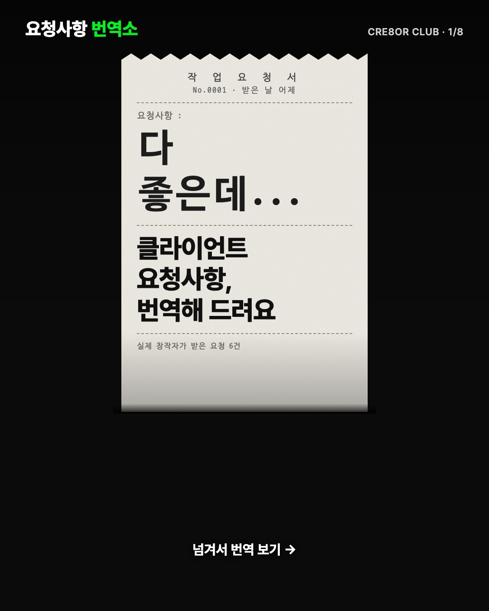
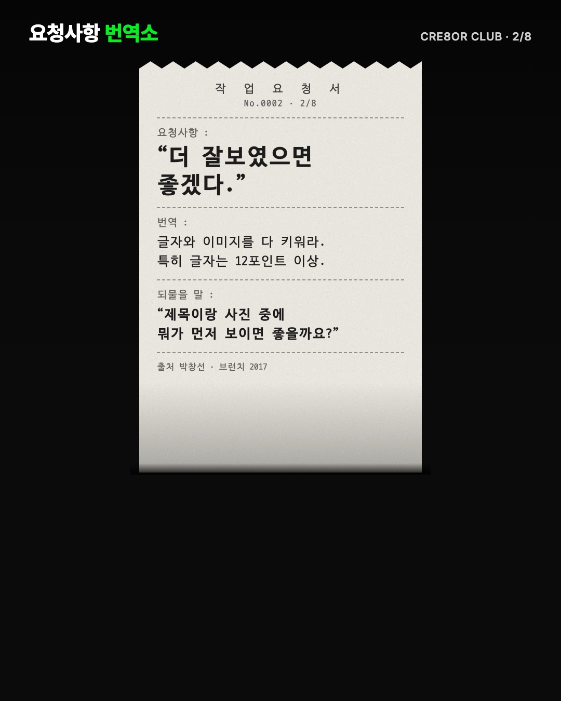
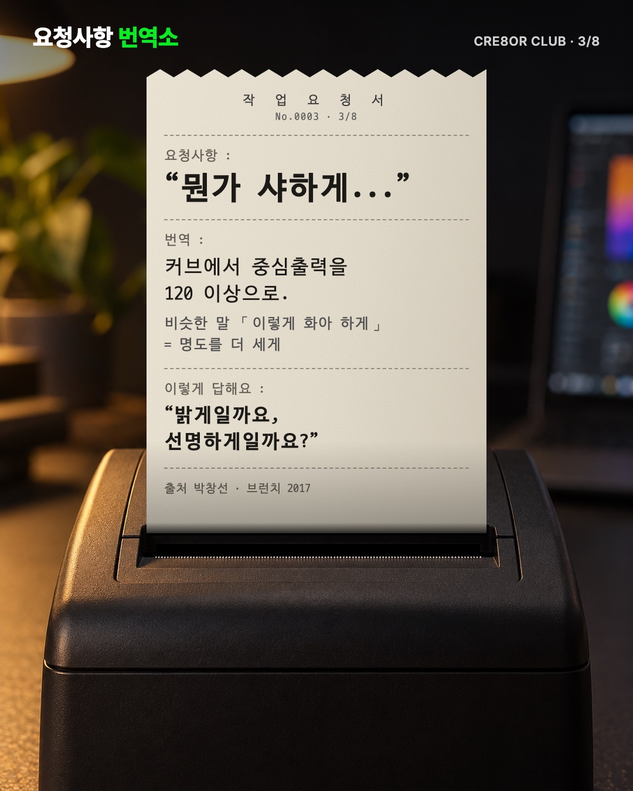
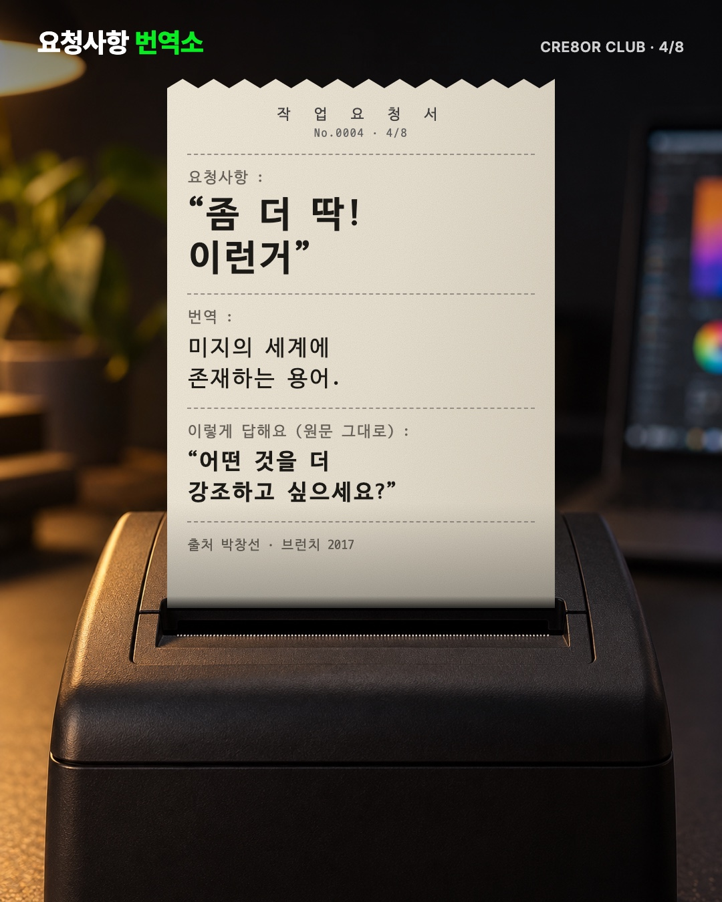
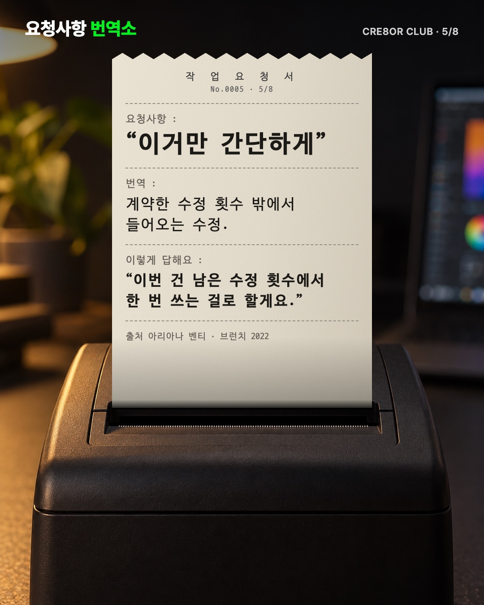
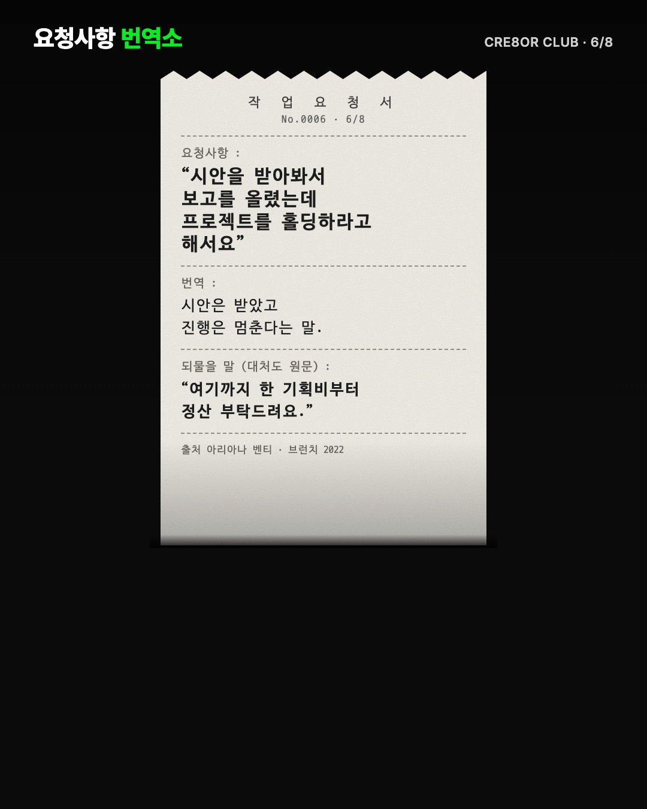
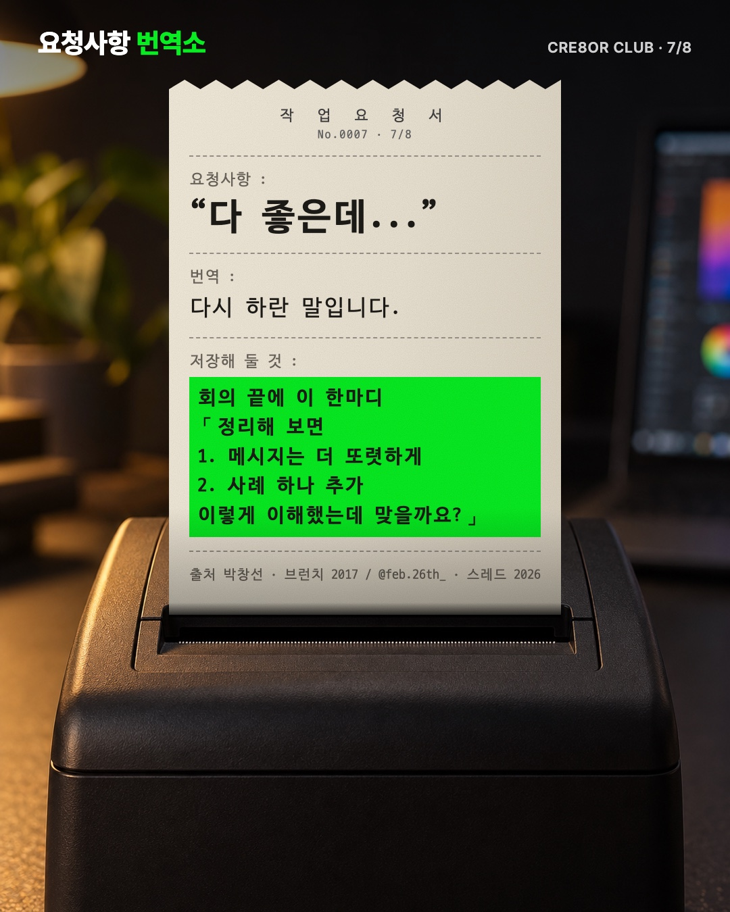
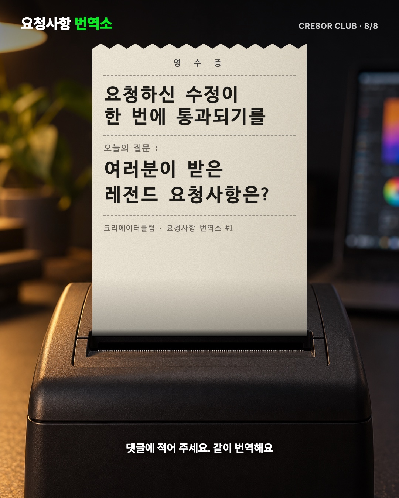

트렌드포털이 다시 엮은 배민 광고 「요청하신 하루가 배달되었습니다」(좋아요 1.9만 · 댓글 102)에서 틀을 빌렸어요. 같은 영수증 서식에 요청사항 한 줄만 바꿔 넘기게 했고, 영수증 자리에 창작자가 실제로 받은 클라이언트 요청을 넣었어요. 아직 시안이고 인스타에는 올리지 않았어요.








사진을 옆으로 밀거나 ‹ › 를 누르면 8장을 넘겨 볼 수 있어요